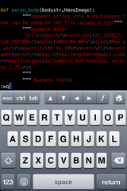

The Past Is Here Too
Earlier today, a friend of mine used his iPhone to shell into a remote machine, edit a file with Vi, and commit it to version control:

Yes, that’s right: he used a hand-held computer a million times more powerful than any available in 1970 to connect over a ubiquitous wireless network to a computer billions of times more powerful than any available in 1970 to run a set of tools that do their best to emulate a line printer. Coincidentally, at about the same time as he was doing this, I was holding a sticky note with “Can you hear me?” written on it up in front of the camera built into my laptop to transmit a real-time video image to people thousands of kilometers away because, well, because it was simpler than anything else I could do at the time.
All of which prompts me to rephrase William Gibson: the past is still here, it’s just not evenly distributed either.